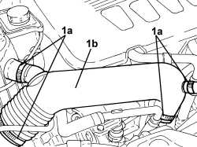

1048A41 HOSE FROM FLOW METER TO TURBOCHARGER - R.R.
- Path
- Procedures > 10 ENGINE > 1048 ENGINE AIR SUPPLY CIRCUIT > 1048A VACUUM AIR CIRCUIT > 1048A41 HOSE FROM FLOW METER TO TURBOCHARGER - R.R.
- Kind
- repair procedure (removal / refitting; the operation number is the code)
- Applies to
- engines: 2.4 JTD 20V; all production periods
- Interactive page
- https://sloeber94.github.io/elrnDB/#/939010520
Applies to: engines: 2.4 JTD 20V; all production periods
 Removing
Removing
 Refitting
Refitting1. Loosen the bands (1a) and remove the hose from the flow meter to the turbocharger (1b).

Applies to: engines: 2.4 JTD 20V; all production periods
Refitting
Removing- Place the hose from the flow meter to the turbocharger back in its housing and secure it using the bands.
Topics that link to this page (10)
- 1008B10 POWER UNIT FRONT SUPPORT FLEXIBLE MOUNTING (TIMING SIDE) - REPLACE
- 1032D12 TIMING SYSTEM PROTECTIVE COVER(S) - R + R
- 1048A42 SLEEVE FROM FLOW METER TO TURBO CHARGER AIR INLET PIPE - R + R
- 1048A50 TURBOCHARGER AIR INTAKE PIPE - R.R.
- 1060G10 AIR FLOW METER - R.R.
- 1088D14 UPPER RADIATOR COOLANT OUTLET HOSE - R.R.
- 1092A10 CRANKSHAFT PULLEY - R + R
- 1092G10 SINGLE ENGINE BELT - R.R
- 1092G14 ENGINE COMPONENT SINGLE BELT MOVING TENSIONER - R + R
- 4130B20 POWER STEERING PUMP - R.R.